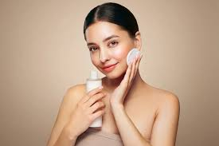

CUIDADOS COM A PELE
A melhor arma contra o envelhecimento é o bom humor e um bom colágeno!

são essenciais para a saúde e prevenção de doenças, envolvendo limpeza diária, hidratação e proteção solar.
Uma rotina eficaz deve ser realizada de manhã e à noite, focando em três passos principais:
Limpeza (Manhã e Noite): Fundamental para remover impurezas, poluição e oleosidade excessiva, prevenindo cravos e espinhas. Use sabonetes específicos para o seu tipo de pele.
Hidratação: Mantém a barreira de proteção cutânea e evita o ressecamento, sendo essencial para todos os tipos de pele, incluindo as oleosas.
Proteção Solar (Diária): O passo mais importante para prevenir envelhecimento precoce, manchas e câncer de pele. Deve ser aplicado diariamente, mesmo em dias nublados.